Das Haus
Im wildromantischen Gasterntal erwartet Sie unser Berghotel. Ein Betrieb des Waldhotel Doldenhorn und Landgasthof Ruedihus Kandersteg.
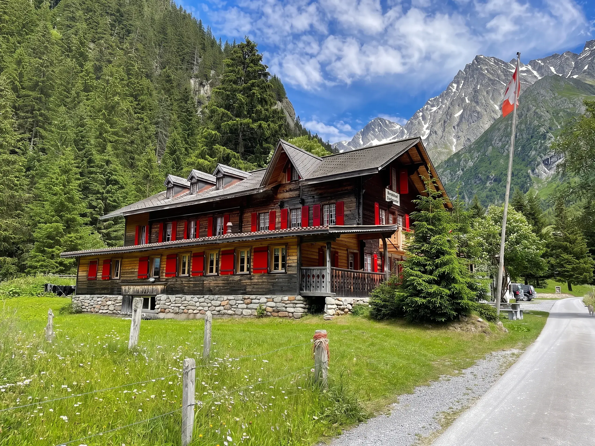
Die Marke des Hauses besteht aus wenigen Dingen, die immer gleich bleiben: der Schriftzug aus dem Willkommensschreiben, das Grau der Talwand mit Holz, Kander und Tanne, drei Schriften und die Raute der Laube als Muster. Alles andere zeigen die Fotos des Hauses und des Tals.
- Echte Räume, Teller und das Tal, gross und scharf
- Ruhige Sätze in der Sie-Form, Schweizer Schreibung
- Mundart dort, wo das Haus sie selbst schreibt
Der Schriftzug
Aus dem Willkommensschreiben des Hauses nachgezeichnet, damit er in jeder Grösse scharf bleibt. Er steht in seiner Form: nie verzerrt, gedreht, umgefärbt oder gerahmt.
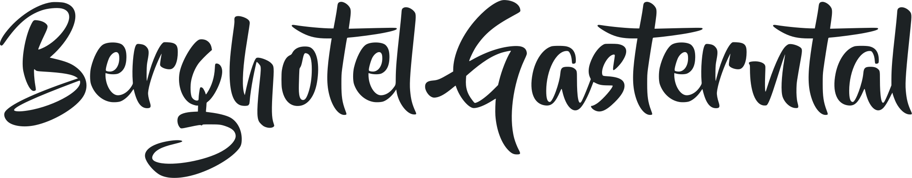
Rundum braucht er Luft; nie an den Rand, nie über ein unruhiges Foto
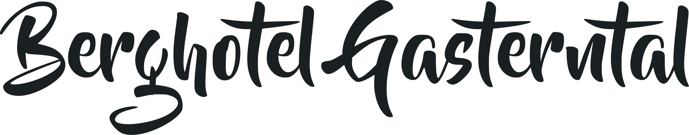
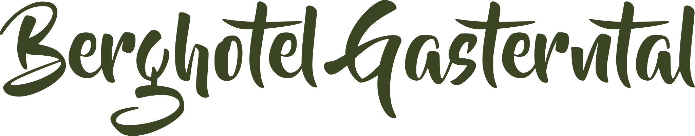
Die Teile
«Berghotel» und «Gasterntal» einzeln, dazu «Ässe u trinke» aus der Karte: für Kopfzeilen, Rubriken und kleine Flächen.
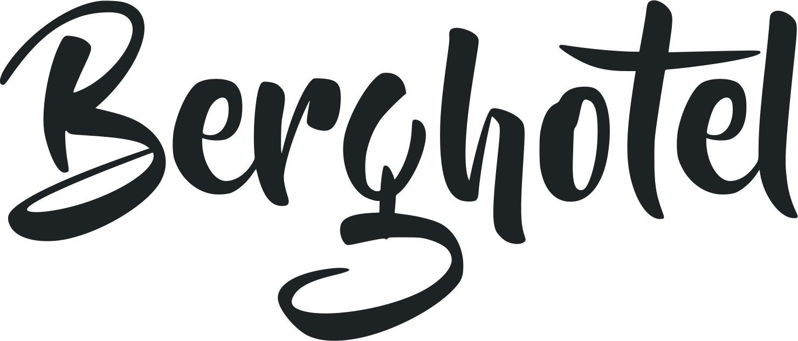
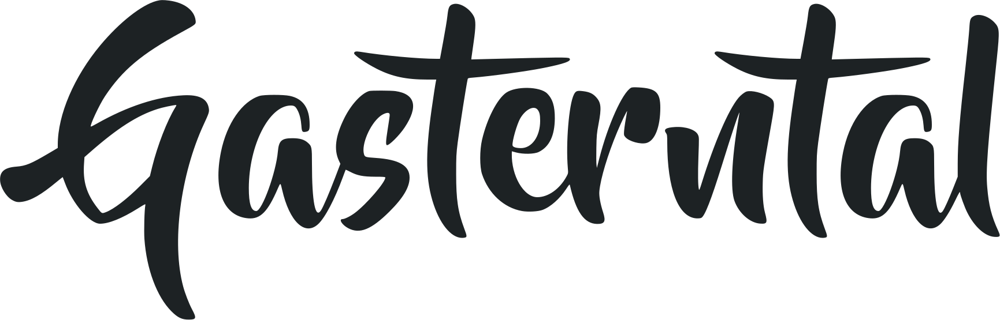
Raute und Name
Die Raute aus den Balkonbrettern am Giebel ist das kleine Zeichen: Siegel, Profilbild, Zierlinie. Der Name steht in der Titelschrift der Website.
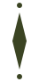
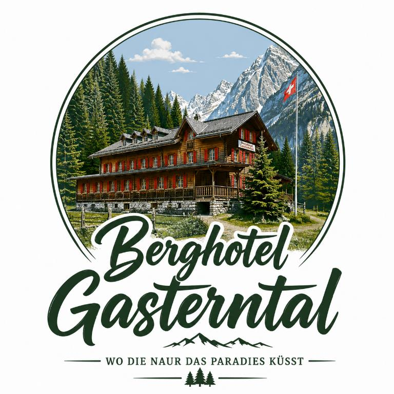
Auf der Karte 2026 steht ein rundes Zeichen: ein Bild des Hauses, darunter der Schriftzug und der Satz «WO DIE NAUR DAS PARADIES KÜSST». Das Bild ist erzeugt, und im Satz fehlt ein Buchstabe («NAUR»). Das Zeichen liegt unverändert in den Dateien, zum Nachschlagen. Für Neues gilt der Schriftzug, der Satz heisst richtig «Wo die Natur das Paradies küsst».
Talwand, Kander und Holz
Die Werte stehen nicht von Hand hier: sie kommen aus der Gestaltung der Website (assets/css/main.css), jeder Ton an einem Foto des Hauses oder des Tals gemessen.
Der Fels
Das Grau der Talwand im Regen trägt die dunklen Flächen, immer mit der Raute der Laube als Muster.
#1D2224RGB 29 · 34 · 36Grund der Seite, dunkle AbschnitteTalwand im Regen#2C3136RGB 44 · 49 · 54zweite dunkle FlächeTalwand, zweiter Ton#14181ARGB 20 · 24 · 26dunkelster Grund: Fuss und Menüdunkelster Grund: Fuss, Menü#262B2FRGB 38 · 43 · 47Karten auf dunklem GrundKander und Papier
Das Grau der Kander, aufgehellt zu Papier und Blatt. Hier wird gelesen.
#E9ECECRGB 233 · 236 · 236helle Abschnitte, Grund der Werkzeugeaufgehellt aus der Kander #c7cfd3#F6F8F8RGB 246 · 248 · 248Karten, Blätter und Felder#C7CFD3RGB 199 · 207 · 211gemessener Ton der Kander, LinienHolz und Tanne
Das helle Holz der Balkone betont auf Dunkel, die Tanne auf Hell. Holz schreibt nie den Lesetext auf Papier.
#D6BB96RGB 214 · 187 · 150Linien, Betonung und Schriftzug auf Dunkelhelles Balkonholz: Linien, Betonung auf Dunkel#3B4423RGB 59 · 68 · 35Betonung auf Hell, kleine FlächenTannen am Hang#1A1F21RGB 26 · 31 · 33Schrift auf hellen FlächenDer Laden
Das Rot der Fensterläden in der Sonne. Nur als Punkt, nie als Fläche.
#C5000FRGB 197 · 0 · 15nur als PunktFensterläden in der Sonne: nur als PunktDer heutige Auftritt
So zeigt sich das Haus heute auf seiner Website und im Zeichen der Karte 2026. Zum Nachschlagen, nicht für Neues.
#422615RGB 66 · 38 · 21heutige Website des Hauses#E6E7D5RGB 230 · 231 · 213heutige Website des Hauses#253B24RGB 37 · 59 · 36Schrift im Zeichen der Karte 2026Wo die Farben herkommen
Jeder Ton ist im Foto gesucht: die Stelle, deren Mittel ihm am nächsten liegt, mit dem Abstand nach CIEDE2000 (unter 5 gilt als gleich).
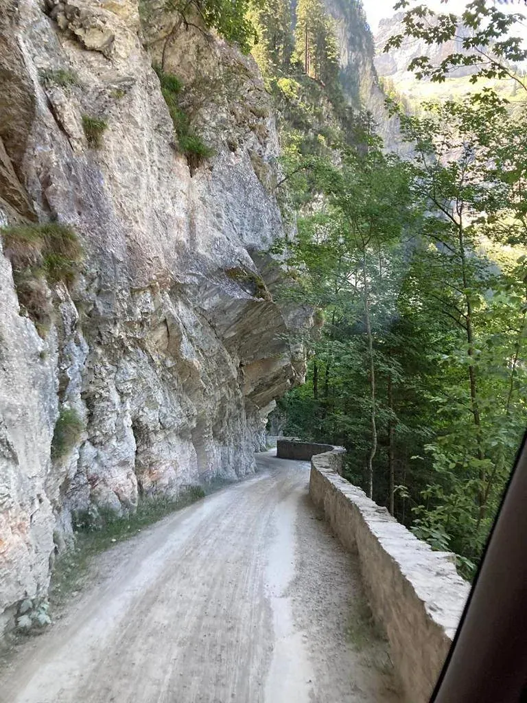
TalwandSchieferDaraus: Talwand, Schiefer.
- Talwand #1D2224im Foto gemessen #292929, Abstand ΔE 4,1
- Schiefer #2C3136im Foto gemessen #333537, Abstand ΔE 2,7
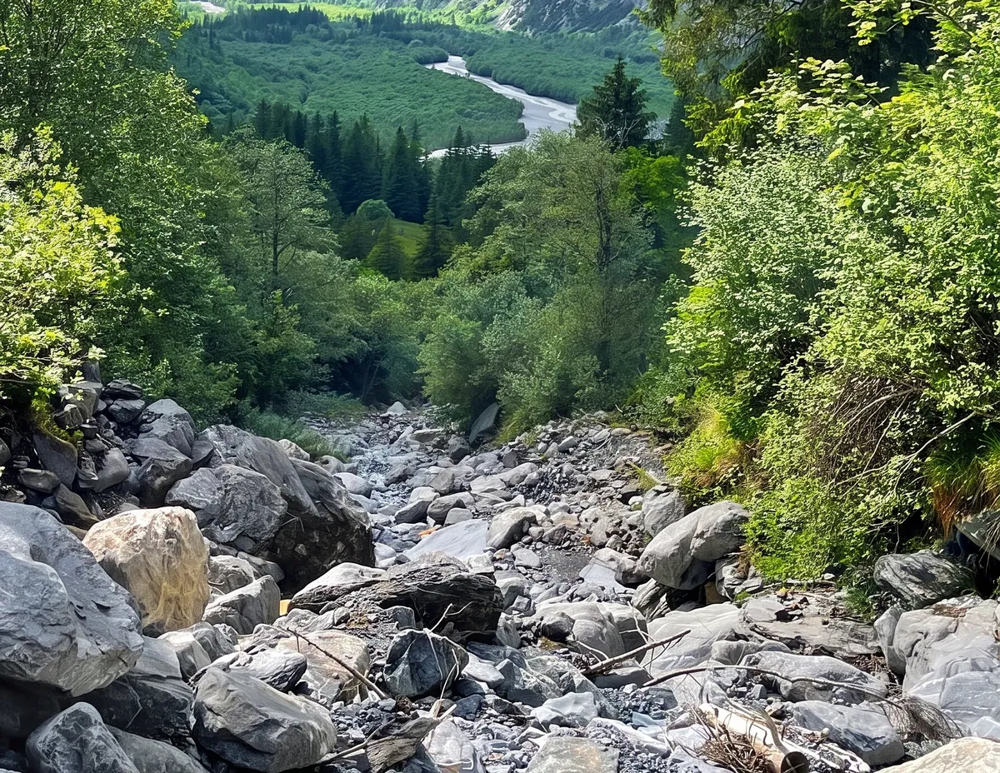
KanderTanneDaraus: Kander, Tanne.
- Kander #C7CFD3im Foto gemessen #C0C6CB, Abstand ΔE 2,5
- Tanne #3B4423im Foto gemessen #384423, Abstand ΔE 1,2
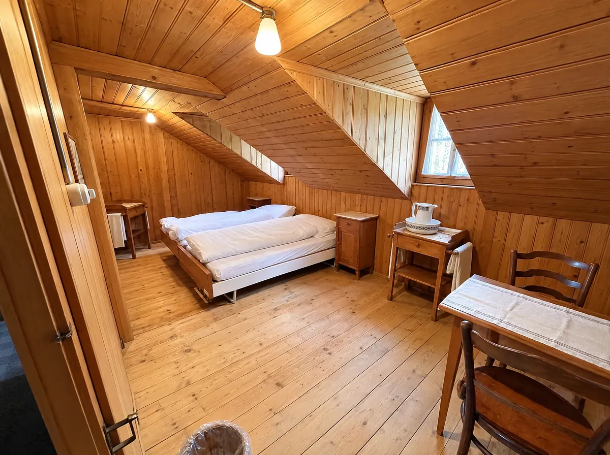
HolzDaraus: Holz.
- Holz #D6BB96im Foto gemessen #D6BB97, Abstand ΔE 0,7
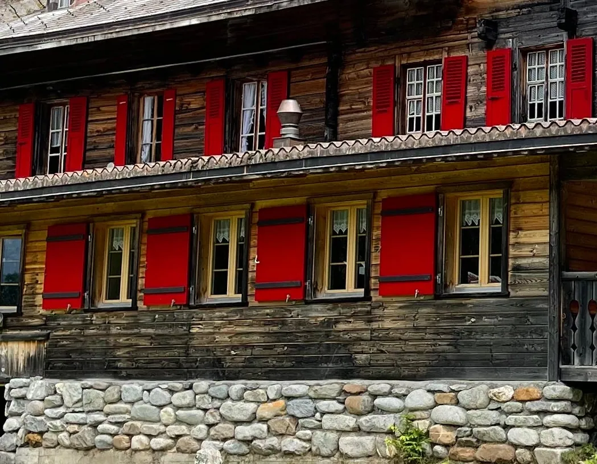
LadenDaraus: Laden.
- Laden #C5000Fim Foto gemessen #B90101, Abstand ΔE 3,1
Was sich lesen lässt
- AaTinte auf PapierLesetext auf Papier · 14,0 : 1 · sehr gut, auch für langen Text
- AaPapier auf TalwandSchrift auf der Talwand · 13,5 : 1 · sehr gut, auch für langen Text
- AaHolz auf TalwandTitel und Schriftzug auf der Talwand · 8,7 : 1 · sehr gut, auch für langen Text
- AaBlatt auf SchieferSchrift auf Schiefer · 12,3 : 1 · sehr gut, auch für langen Text
- AaTanne auf PapierBetonung auf Papier · 8,7 : 1 · sehr gut, auch für langen Text
- AaHolz auf PapierHolz auf Papier · 1,5 : 1 · nur Schmuck, nie Schrift
- AaLaden auf PapierDer Laden auf Papier · 5,2 : 1 · gut für Lesetext
Drei Schriften
Barlow Semi Condensed für Titel, verwandt mit der DIN der Karte. Instrument Sans für den Lesetext, DM Mono für kleine Angaben und Knöpfe. Der Schriftzug ist eine Zeichnung, keine Schrift.
- Wo die Natur das Paradies küsstBarlow Semi CondensedGrosse Zeilen und Titel · 600, normale Schreibung, 1,2 % enger
- Ässe u trinkeBarlow Semi CondensedZweite Titelstufe · 500, normale Schreibung
- Einfache, heimelige Zimmer.Instrument SansLesetext · 400 bis 600, 18 px, Zeilenabstand 1,62
- Selden · 3718 KanderstegDM MonoKleine Angaben und Knöpfe · 400, Versalien, 17 % gesperrt
Die Raute als Tapete
Die Balkonbretter am Giebel als Muster, Ton in Ton: Holz 4,5 % auf der Talwand, Tinte 3 % auf Papier. Nie ein freies Motiv.
Echte Bilder
Fotos zeigen, was der Gast vorfindet: das Haus, die Stuben, die Zimmer, das Essen und das Tal. Nie Schrift auf ein bewegtes Foto, nie Gästefotos, nie hineinzoomen, bis es unscharf wird.
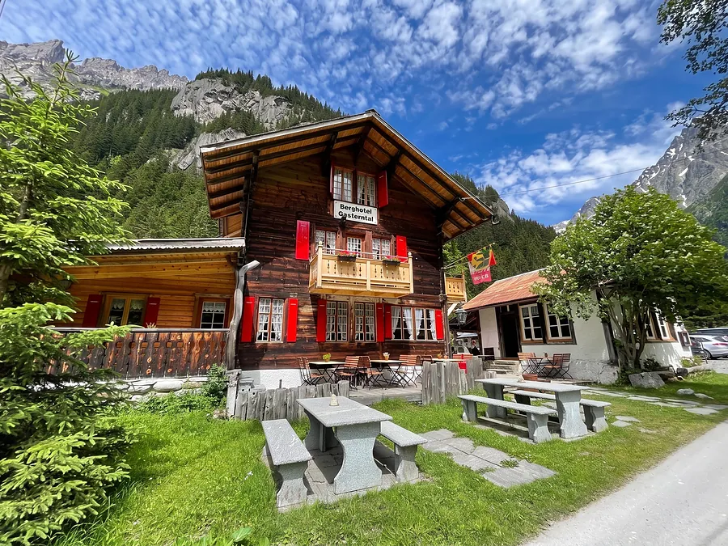
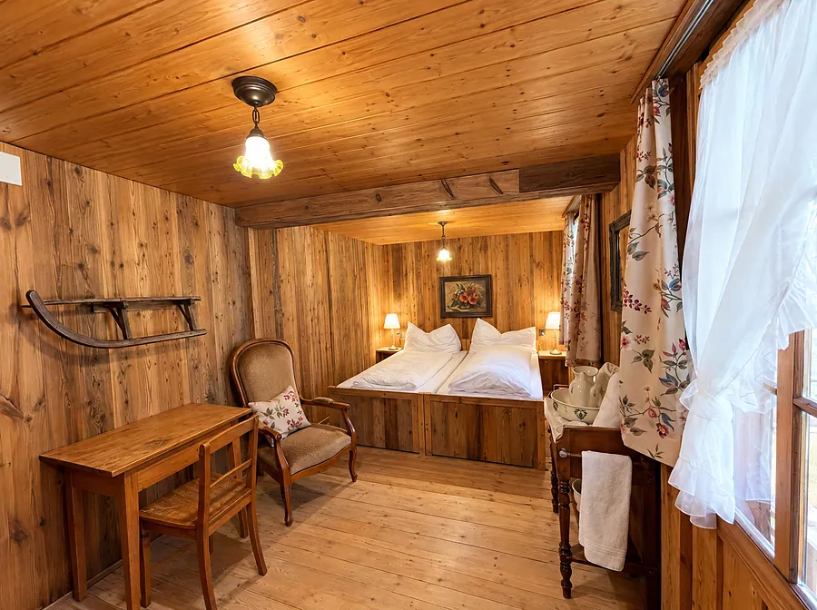
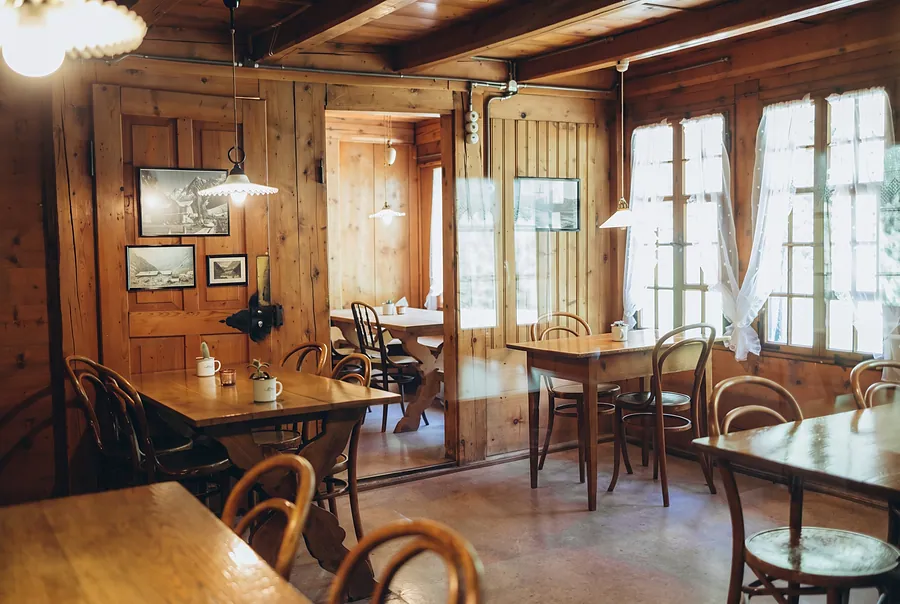
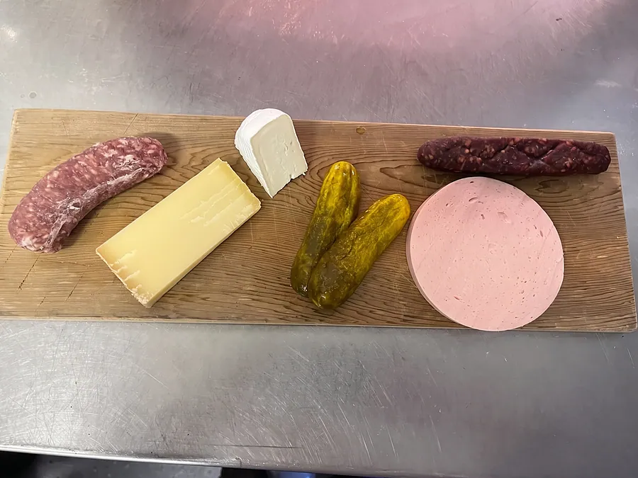
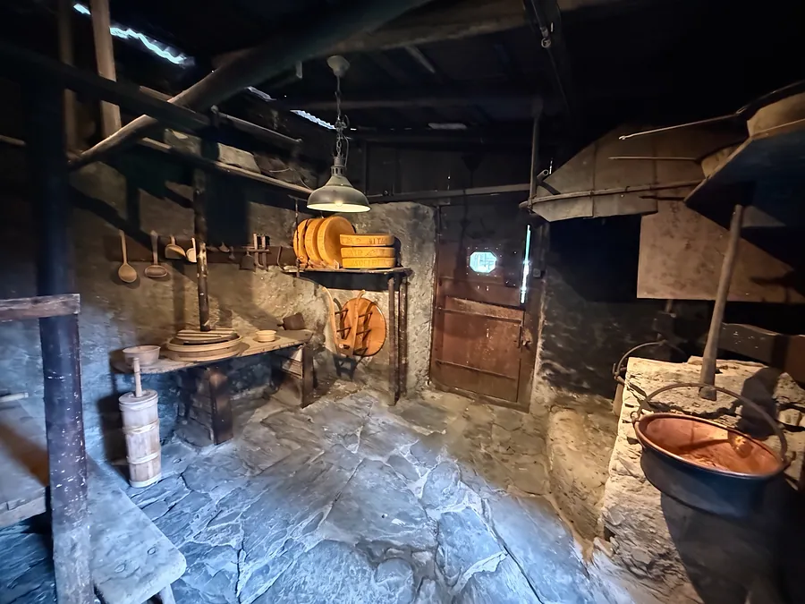
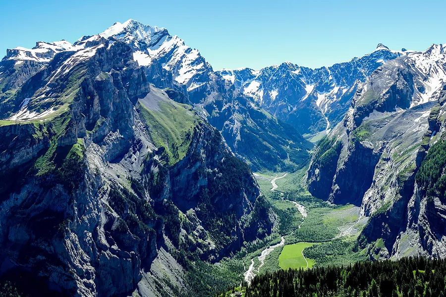
- Runde Ecken, weicher Schatten, keine Rahmenlinie
- Freie Fotos des Tals nur mit Namen und Lizenz
- Mit KI bearbeitet heisst: Licht, Farbe und Flächen, der Raum bleibt
- Keine mit KI erzeugten Bilder
Der Ton
Ruhig, herzlich, konkret. Sie-Form, Schweizer Schreibung mit ss. Kurze Sätze, jedes Wort hat einen Zweck.
So
- Wo die Natur das Paradies küsst
- Einfache, heimelige Zimmer.
- Gönnen Sie sich 90 Minuten Wärme, Ruhe und Natur
- Selden · 3718 Kandersteg
Nicht so
- Sauna-Erlebnis!!!
- Das einzigartige Wellness-Highlight in den Alpen
- Nur noch wenige Termine, jetzt zugreifen